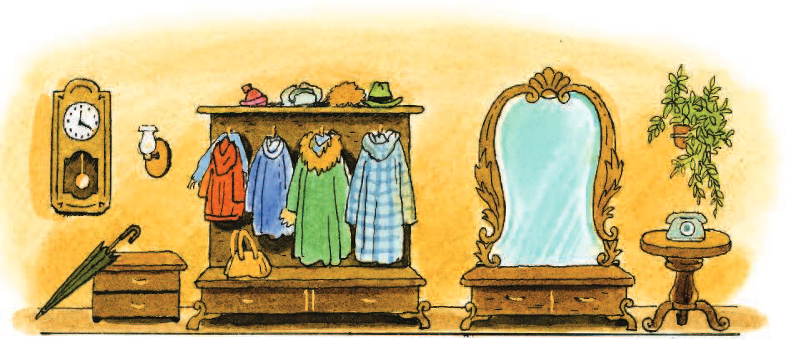

Хочу вам рассказать о девочке Оле, которая вдруг увидела себя со стороны. Увидела так, как можно видеть не себя, а совсем другую девочку - скажем, сестру или подругу. Таким образом она довольно долго наблюдала самое себя, и это помогло ей избавиться от недостатков, которых она в себе не замечала.
И знаете, что самое главное в этой истории? Оля убедилась, что даже, казалось бы, маленькие недостатки характера могут стать серьезным препятствием на пути к цели. Она попала в одну сказочную страну, где ей пришлось пережить много опасных приключений, подобных тем, о которых она читала в старых сказках. Может быть, Вы тоже читали эти старые сказки, где короли, разные принцы и придворные дамы так добры, справедливы, прекрасны и вообще так приторно сладки, как будто вымазаны медом. И вот однажды девочка Оля совершила путешествие в сказочную страну и увидела там... Впрочем, я лучше расскажу Вам все по порядку.

...В то утро Оля вела себя из рук вон плохо. Она встала позже, чем следовало, а когда бабушка будила её, брыкалась и, не открывая глаз, говорила противным, скрипучим голосом:
- Отстань! Ну что ты ко мне пристала? - Оля, - настойчиво говорила бабушка, - ты можешь опоздать в школу. Голос у бабушки был спокойный и ласковый, потому что все бабушки очень ласковы. Они так любят своих внучек, что не сердятся даже тогда, когда маленькие девочки говорят им дерзости.
- Опять читала в постели допоздна, - вздохнула бабушка, поднимая упавшую на пол книгу, на обложке которой было крупно написано: "Сказки". - А вот теперь подняться не можешь.

Оля села на кровать, свесив босые ноги, и сердито посмотрела на бабушку одним глазом, так как другой все ещё был закрыт.
- Какая ты... недобрая... Никогда не дашь поспать! Олино платье оказалось под кроватью. Одну туфлю она долго не могла отыскать и наконец, обнаружила её под книжным шкафом. Потом, когда бабушка заплетала ей косы, она дёргалась и говорила:
"Больно!", хотя на самом деле больно ничуточки не было.
А после завтрака Оля никак не могла найти свои учебники. - Вчера я положила их на этот стол. Куда ты задевала их? - ворчала она на бабушку, топая ногой. - Я никогда не теряю своих вещей, - спокойно отвечала бабушку. - Будь любезна и ты класть свои вещи на место. - Нет, - кричала Оля, - я всегда кладу все на место! Это ты нарочно спрятала мои книги. Тут даже бабушкиному терпению пришёл конец, и она, немного повысив голос, проговорила: - У, бесстыдница! Как только папа и мама вернуться с работы, я им все расскажу. Угроза подействовала: Оля побаивалась папы и мамы. Она негромко проговорила: "Подумаешь!.." - и, надув губы, полезла под кровать.

Конечно, под кроватью книг не оказалось; не оказалось их в ванной и в кухне. Неизвестно, сколько времени продолжались бы поиски, если бы бабушка не заглянула в Олин портфель.
- Видишь, какая ты рассеянная, Оля! Ведь ты же сама вчера положила все свои учебники к себе в портфель. О, как бы я хотела, чтобы ты посмотрела на себя со стороны! Вот стыдно бы тебе стало...

Оля, которой и так уже было стыдно, что она понапрасну обидела бабушку, чмокнула старушку в щеку, взяла переднюю одеваться. В передней стояло большое зеркало, перед которым она так любила вертеться.
- Одевайся поскорее, Оля! - крикнула ей вслед бабушка. До звонка осталось десять минут.
Но Оля и не думала одеваться. Из зеркала на неё смотрела девочка в чёрном переднике, с красным галстуком на шее. Девочка как девочка - две русые косы с бантом и два больших голубых глаза. Но Оля считала себя очень красивой и поэтому, очутившись перед отказом, долго не могла от него оторваться. Так было всегда.
- Как, ты еще не ушла? - вскрикнула бабушка, появилась в пе редней. - Нет уж, сегодня я непременно расскажу все папе и маме!
- Подумаешь!.. - ответила Оля и начала одеваться.
- Учишься в пятом классе, а ведёшь себя, как маленькая. Ох, если бы ты могла посмотреть на себя со стороны!
- Подумаешь!.. - повторила Оля, помахала рукой и ещё раз, украдкой взглянув на себя в зеркало, скрылась за дверью...
В этот день Оля вернулась из школы злая-презлая: она поссорилась с подругами. Вообще она часто ссорилась с подругами и почти все гда была виновата во всем.
- Какая ты капризная! - сказали ей подруги.
- Больше мы не будем с тобой дружить! - Подумаешь!.. - выпятила Оля нижнюю губу и сделала вид, что нисколько не огорчена. На самом дел на душе у неё было прескверно. Кончался декабрь, не улице темнело рано. А так как после школы Оля не могла удержаться от со блазна заглянуть в кино, где шла новая картина, то когда она пришла домой, в морозном небе уже светились звезды. И тут, к своему ужасу, Оля увидела, что на лестнице не горят лампы. А темноты она боялась больше всего на свете.
Пугаясь шума собственных шагов, Оля стремительно взбежала на свой этаж и подняла такой звон, что у бабушки тряслись руки, когда она открывала дверь.
- Что случилось? - испуганно спросила старушка.
- А где твой ключ? - Бабунечка, я потеряла свой ключ, тяжело дыша, сказала Оля.
Бабушка всплеснула руками. - Это уже в третий раз! Ну что теперь делать? Свой ключ я отдала слесарю домоуправления. Ах, Оля, Оля, какая ты растеряшка! Беги к слесарю, он, наверно уже сделал новый ключ.
- Бабунечка... на лестнице так темно... Наверно, перегорели пробки.
- Боишься? - Я просто... не люблю темноту...
- Ах ты, трусишка! Ну ладно уж, схожу сама. - Бабушка оделась, погрозила Оле пальцем: - Шоколадку в буфете до обеда не трогай! и скрылась за дверью.
Оля стала раздеваться на ходу. В одном месте она оставила калоши, в другом - шапочку, в третьем - пальто. Затем, после небольших колебаний, она достала из буфета шоколадку и съела её. Ей было скучно. Она взяла книгу, на обложке которой было написано: "Сказки", и начала листать её. Одна картинка привлекла внимание Оли. С высокого холма открывался вид на удивительный город с множеством разноцвет ных зданий с высокими шпилями. Нарядные люди гуляли на площади вокруг фонтана. "Вот бы и мне погулять там!" - подумала Оля и вдруг услышала какой-то странный звон в передней.

Она побежала в переднюю. Но все было тихо. "Наверное, послышалось", - подумала Оля и, бросив взгляд на зеркало, как обычно, начала вертеться перед с ним. Она оглядела себя с головы до ног, несколько раз повернулась кругом, потом сощурила глаза и высунула язык. Потом Оля рассмеялась и начала выбивать ногами дробь.
И тут ей показалось... Нет, этого не может быть! Чутко прислушиваясь, Оля снова стукнула каблуками об пол и теперь уже вполне отчётливо разобрала, как в глубине зеркала стеклянным мелодичным звуком отозвалось эхо. Да, эхо отозвалось в зеркале, в той самой передней, которая в нем отражалась, а не в той, настоящей, в которой стояла Оля.
Это было так странно, что Оля онемела, широко открыв свои голубые глаза. И в тишине она ясно услышала, как кто-то вздохнул длинно и печально. Оле стало страшно... Она выждала минутку и не громко спросила:
- Кто это вздыхает? - Я, - негромко ответил красивый звенящий голос, словно ударились друг о дружку хрустальные стёклышки. - Кто ты? - перевела дыхание Оля. - Здесь никого нет.
- Это я, зеркало, - снова зазвенел голос.
- Все равно это очень странно... Я боюсь тебя, зеркало.
- Напрасно, девочка... Я доброе волшебное зеркало. Я не причиню тебе никакого зла. Не правда ли, я тебе нравлюсь? Ты так любишь смотреть в моё стекло!
- Это правда, - сказала Оля, осмелев и делая шаг к зеркалу.
А голос звучал. - Бабушка очень часто говорит, что хотела бы, чтобы ты увидела себя со стороны... - Но разве это возможно? - удивилась Оля.
- Ну, конечно, возможно. Только для этого тебе нужно побывать по ту сторону зеркала.
- Ах, как это интересно! - воскликнула Оля. - Разреши мне, пожалуйста, побывать по ту сторону зеркала.
Голос ответил не сразу, как будто зеркало погрузилось в задумчивость.
- С твоим характером, - произнёс наконец звенящий голос, - опасно очутиться по ту сторону зеркала.
- Разве у меня плохой характер? Снова раздался вздох. - Видишь ли, ты, конечно, добрая девочка... Я вижу добрые глаза - значит, и сердечко у тебя доброе. Но у тебя есть недостатки, которые могут помешать тебе в трудную минуту.
- Я ничего не боюсь! - решительно махнула косичками Оля.
- Что ж, пусть будет по-твоему, - произнёс голос.
И передняя вдруг наполнилась звоном, словно разбились тысячи хрустальных стёклышек. Оля вздрогнула, и книга, которую она держала под мышкой, полетела на пол.